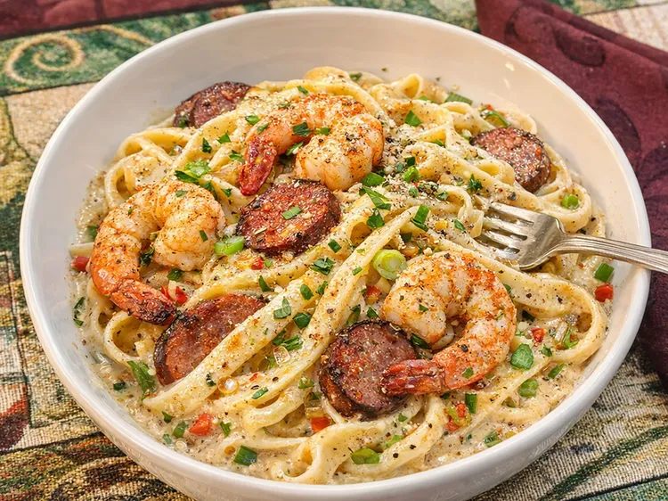

Mardi Gras Pasta

Description
This Mardi Gras pasta is a Cajun fettuccine with shrimp and andouille sausage, a perfectly satisfying, flavorful restaurant-worthy dish at home. It's quick enough for home cooks who want to save time by using store-bought Alfredo, but flavorful enough for experienced cooks to swap in homemade sauce.
Ingredients
- 2 links andouille sausage, sliced into coins
- 1 tablespoon butter
- 2 tablespoons finely minced shallot
- 1 tablespoon finely minced celery
- 1 tablespoon finely minced red bell pepper
- 1 clove garlic, minced
- 1/8 teaspoon smoked paprika
- ground white pepper, to taste
- 1 pinch cayenne pepper (optional)
- 1 (11-ounce) container refrigerated Alfredo sauce, such as Giovanni Rana®
- 2 tablespoons milk, or more as needed
- 1/4 teaspoon Cajun seasoning, or to taste
- 9 ounces refrigerated (fresh) fettuccine pasta
- 4 ounces frozen pre-cooked shrimp, thawed, patted dry
- lemon zest
- chopped fresh parsley (optional)
Steps
- Fill a large pot with lightly salted water and bring to a rolling boil. Cook fettuccine at a boil until just tender, 2 to 3 minutes. Reserve 1/4 cup pasta water, then drain pasta.
- Meanwhile heat a wide skillet over medium heat. Add andouille sausage coins and cook until lightly browned and fat has rendered, 3 to 4 minutes. Remove sausage from the pan and set aside, leaving about 1 tablespoon fat in the skillet.
- Reduce heat to medium-low and add butter to the skillet. Stir in shallot, celery, and red bell pepper. Cook slowly, stirring occasionally, until vegetables are fully softened and fragrant, 5 to 7 minutes.
- Add garlic and cook until fragrant, about 30 seconds. Stir in smoked paprika, white pepper, and cayenne. Reduce heat to low and stir in Alfredo sauce and milk. Warm gently without simmering. Taste and add up to 1/4 teaspoon Cajun seasoning, to the heat level you prefer.
- Add pasta to the sauce along with 2 to 3 tablespoons reserved pasta water. Toss gently until pasta is evenly coated and sauce is silky.
- Add shrimp and reserved andouille sausage to the skillet. Fold gently and cook just until shrimp is warmed through, 1 to 2 minutes.
- Remove from heat and finish with lemon zest. Garnish with parsley.